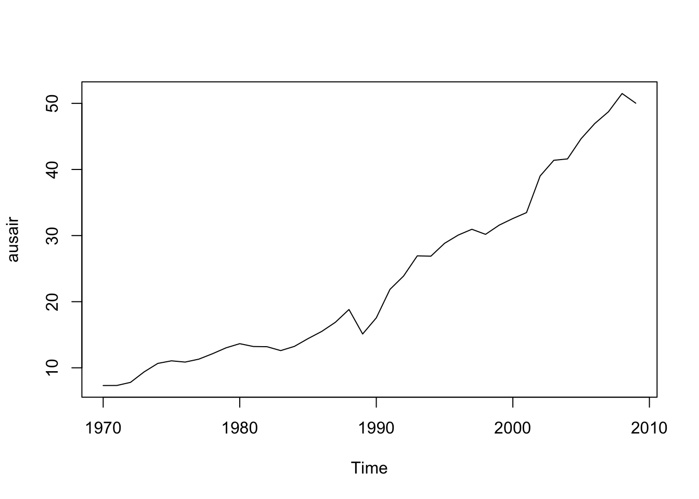
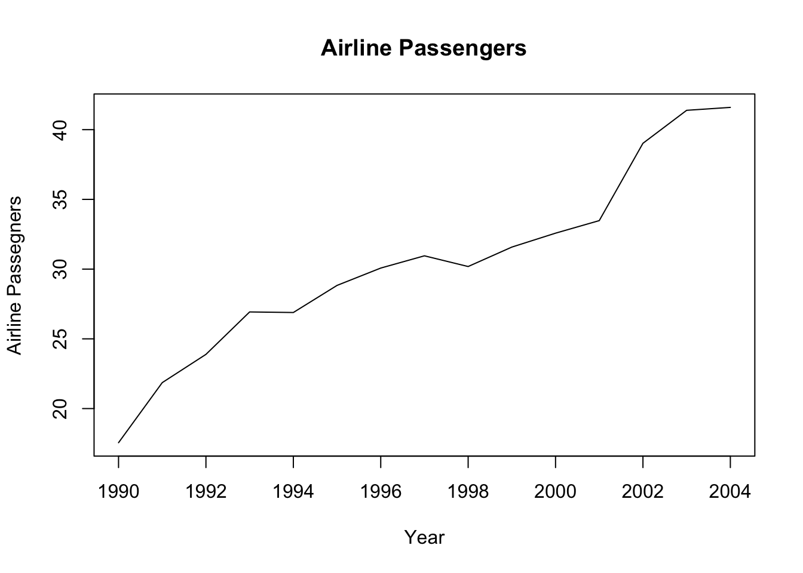
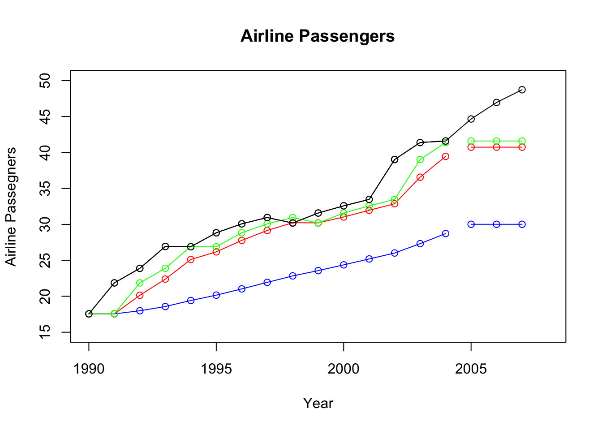
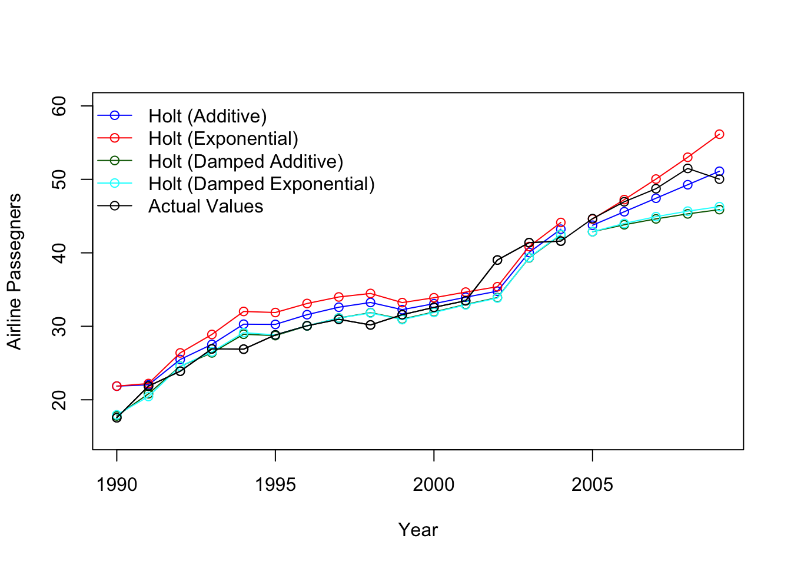
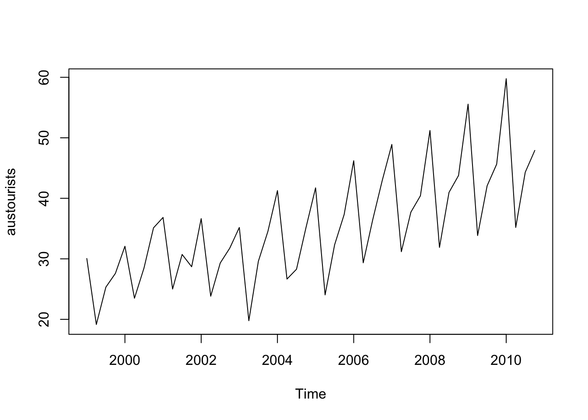
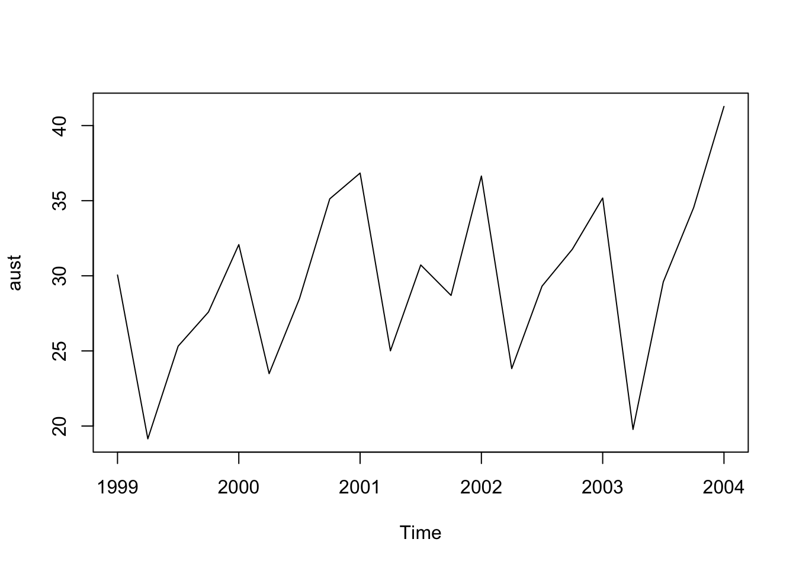
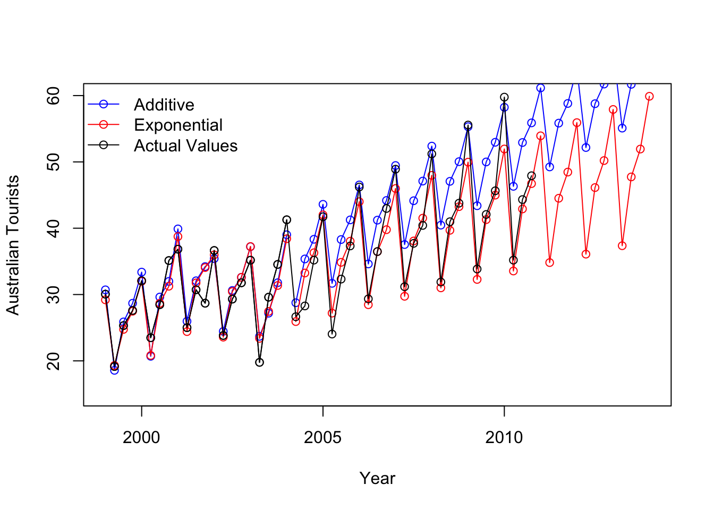
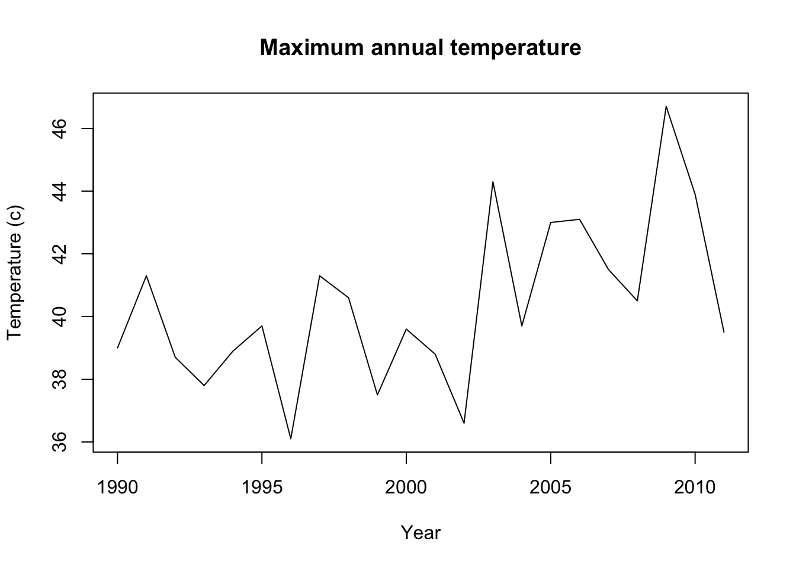
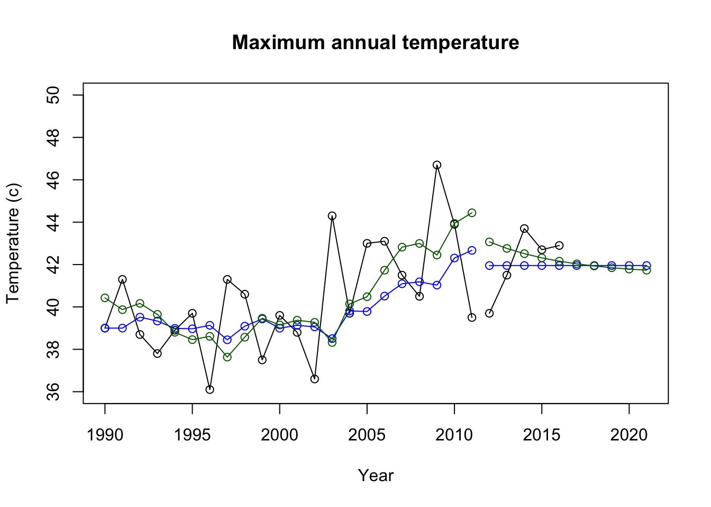

#install.packages("fpp")
library(fpp)## Loading required package: forecast## Registered S3 method overwritten by 'quantmod':
## method from
## as.zoo.data.frame zoo## Loading required package: fma## Loading required package: expsmooth## Loading required package: lmtest## Loading required package: zoo##
## Attaching package: 'zoo'## The following objects are masked from 'package:base':
##
## as.Date, as.Date.numeric## Loading required package: tseries##
## 'tseries' version: 0.10-58
##
## 'tseries' is a package for time series analysis and computational finance.
##
## See 'library(help="tseries")' for details.# 1. SES MODEL FOR AUS AIR
data(ausair)
plot(ausair)
#returns a ts object
air = window(ausair, start = 1990, end = 2004)
# Always plot the data first!
plot(air,ylab = "Airline Passegners", xlab = "Year", main = "Airline Passengers")
#fit 3 different simple exponential smoothing models ... how are they different?
# what does the h paramter do?
fit1 = ses(air, initial = "simple",alpha = .1,h = 3)
fit2 = ses(air,initial = "simple",alpha = .6, h = 3)
fit3 = ses(air, h = 3) #defaults
# the forecast package has a nice accuracy funciton with various metrics just pass it the
# the model and the data! (This is the "training" data)
accuracy(fit1, ausair)## ME RMSE MAE MPE MAPE MASE ACF1 Theil's U
## Training set 8.306207 8.961575 8.306207 26.03453 26.03453 4.531773 0.565996103 NA
## Test set 16.766602 16.849234 16.766602 35.75987 35.75987 9.147670 -0.003569265 8.622667accuracy(fit2, ausair)## ME RMSE MAE MPE MAPE MASE ACF1 Theil's U
## Training set 2.576335 3.101549 2.582686 8.507273 8.528313 1.409084 0.206215181 NA
## Test set 6.038897 6.264665 6.038897 12.797965 12.797965 3.294755 -0.003569265 3.443693accuracy(fit3, ausair)## ME RMSE MAE MPE MAPE MASE ACF1 Theil's U
## Training set 1.602998 2.290962 1.710834 5.406487 5.766099 0.9334119 -0.085328673 NA
## Test set 5.182781 5.444168 5.182781 10.965507 10.965507 2.8276672 -0.003569265 3.032778#Reset the plot
plot(air,ylab = "Airline Passegners", xlab = "Year", type = "o", xlim = c(1990, 2008),ylim = c(15,50), main = "Airline Passengers")
#Plot the estimated values from the models .. the "fitted" values are the training values.
lines(fitted(fit1), col = "blue", type = "o")
lines(fitted(fit2), col = "red", type = "o")
lines(fitted(fit3), col = "green", type = "o")
# the $mean values are the forecasts.
lines(fit1$mean, col = "blue", type = "o")
lines(fit2$mean, col = "red", type = "o")
lines(fit3$mean, col = "green", type = "o")
# These are the actual values! Compare visually with the forecasts!
air2008 = window(ausair, start = 1990, end = 2007)
points(air2008, type = "o")
# Compare the forecasts with the actual values with various fit metrics.
accuracy(fit1, air2008)## ME RMSE MAE MPE MAPE MASE ACF1 Theil's U
## Training set 8.306207 8.961575 8.306207 26.03453 26.03453 4.531773 0.565996103 NA
## Test set 16.766602 16.849234 16.766602 35.75987 35.75987 9.147670 -0.003569265 8.622667accuracy(fit2, air2008)## ME RMSE MAE MPE MAPE MASE ACF1 Theil's U
## Training set 2.576335 3.101549 2.582686 8.507273 8.528313 1.409084 0.206215181 NA
## Test set 6.038897 6.264665 6.038897 12.797965 12.797965 3.294755 -0.003569265 3.443693accuracy(fit3, air2008)## ME RMSE MAE MPE MAPE MASE ACF1 Theil's U
## Training set 1.602998 2.290962 1.710834 5.406487 5.766099 0.9334119 -0.085328673 NA
## Test set 5.182781 5.444168 5.182781 10.965507 10.965507 2.8276672 -0.003569265 3.032778fit1$model## Simple exponential smoothing
##
## Call:
## ses(y = air, h = 3, initial = "simple", alpha = 0.1)
##
## Smoothing parameters:
## alpha = 0.1
##
## Initial states:
## l = 17.5534
##
## sigma: 8.9616#2 Holt's Linear Trend Model for AUS AIR
fit1h = holt(air, alpha = .8, beta = .2, initial = "simple", h = 5)
fit2h = holt(air, alpha = .8, beta = .2, initial = "simple", exponential = TRUE, h = 5)
# Check out estiamted values of the "training" data from the first holt model
fitted(fit1h)## Time Series:
## Start = 1990
## End = 2004
## Frequency = 1
## [1] 21.86010 22.03237 25.48462 27.54059 30.28813 30.26106 31.58122 32.59923 33.24224 32.26755
## [11] 33.07776 33.95807 34.77708 40.05535 43.21586# Check out the forecast value (h of them)
fit1h$mean## Time Series:
## Start = 2005
## End = 2009
## Frequency = 1
## [1] 43.75697 45.59352 47.43008 49.26663 51.10319# Reset the Plot!
plot(air,ylab = "Airline Passegners", xlab = "Year", type = "o", xlim = c(1990, 2009),ylim = c(15,60))
#Plot each models estimated values of the training data (Do these one by one to see the differences)
lines(fitted(fit1h),col = "blue", type= "o")
lines(fitted(fit2h), col = "red", type= "o")
#Plot each models forecasts (Do these one by one to see the differences)
lines(fit1h$mean, col = "blue", type= "o")
lines(fit2h$mean,col = "red", type= "o")
# Fit another model ... damped!
fit3h = holt(air, alpha = .8, beta = .2, damped = TRUE, initial = "optimal", h = 5)
# Plot the fitted value (estimated from triaining data)
lines(fitted(fit3h), col = "darkgreen", type= "o")
# Plot the forecasts
lines(fit3h$mean,col = "darkgreen", type= "o")
# Fit another model ... what is the difference?
fit4h = holt(air, alpha = .8, beta = .2, damped = TRUE, initial = "optimal", exponential = TRUE, h = 5)
# Plot the fitted value (estimated from triaining data)
lines(fitted(fit4h), col = "cyan", type= "o")
#Plot the forecasts
lines(fit4h$mean,col = "cyan", type= "o")
# with implicit Test set... it figures out by the time which are training and which are test.
accuracy(fit1h, ausair)## ME RMSE MAE MPE MAPE MASE ACF1 Theil's U
## Training set -1.0292272 2.202869 1.772637 -4.485612 6.364749 0.9671310 0.2088940 NA
## Test set 0.9405879 1.444776 1.371076 1.947628 2.808140 0.7480438 -0.3313068 0.7212626accuracy(fit2h, ausair)## ME RMSE MAE MPE MAPE MASE ACF1 Theil's U
## Training set -2.010092 2.908422 2.565680 -7.724285 9.137707 1.399806 0.3109081 NA
## Test set -1.836519 2.883708 1.859959 -3.672580 3.725068 1.014773 0.1029680 1.403487accuracy(fit3h, ausair)## ME RMSE MAE MPE MAPE MASE ACF1 Theil's U
## Training set 0.3317307 1.653933 1.084962 0.7156323 3.371681 0.591943 0.1675855 NA
## Test set 3.8715783 4.131618 3.871578 7.8802382 7.880238 2.112290 0.2453622 2.086233accuracy(fit4h, ausair)## ME RMSE MAE MPE MAPE MASE ACF1 Theil's U
## Training set 0.3290223 1.702503 1.132340 0.7038748 3.577884 0.6177922 0.1601950 NA
## Test set 3.6193313 3.852076 3.619331 7.3722246 7.372225 1.9746665 0.2053408 1.941093#with explicit Test set ... (same output)
airTest = window(ausair, start = 2005)
accuracy(fit1h, airTest)## ME RMSE MAE MPE MAPE MASE ACF1 Theil's U
## Training set -1.0292272 2.202869 1.772637 -4.485612 6.364749 0.9671310 0.2088940 NA
## Test set 0.9405879 1.444776 1.371076 1.947628 2.808140 0.7480438 -0.3313068 0.7212626accuracy(fit2h, airTest)## ME RMSE MAE MPE MAPE MASE ACF1 Theil's U
## Training set -2.010092 2.908422 2.565680 -7.724285 9.137707 1.399806 0.3109081 NA
## Test set -1.836519 2.883708 1.859959 -3.672580 3.725068 1.014773 0.1029680 1.403487accuracy(fit3h, airTest)## ME RMSE MAE MPE MAPE MASE ACF1 Theil's U
## Training set 0.3317307 1.653933 1.084962 0.7156323 3.371681 0.591943 0.1675855 NA
## Test set 3.8715783 4.131618 3.871578 7.8802382 7.880238 2.112290 0.2453622 2.086233accuracy(fit4h, airTest)## ME RMSE MAE MPE MAPE MASE ACF1 Theil's U
## Training set 0.3290223 1.702503 1.132340 0.7038748 3.577884 0.6177922 0.1601950 NA
## Test set 3.6193313 3.852076 3.619331 7.3722246 7.372225 1.9746665 0.2053408 1.941093#Add the actual values to visually compare forecasts to actual values
air2008 = window(ausair, start = 1990, end = 2009)
points(air2008, type = "o")
legend("topleft", legend = c("Holt (Additive)", "Holt (Exponential)", "Holt (Damped Additive)", "Holt (Damped Exponential)", "Actual Values"),
col = c("blue", "red", "darkgreen", "cyan", "black"), lty = 1, pch = 1, bty = "n")
#3. Seasonal Trend
#Load the data
data("austourists")
# Read about the dataset!
?austourists
# Always plot the data first!
plot(austourists)
# returns a ts object.
aust = window(austourists,start = 1999, end = 2004)
plot(aust)
#fit an additive and multiplicative model
fit1s = hw(aust,seasonal = "additive",h = 40)
fit2s = hw(aust,seasonal = "multiplicative",h = 40)
#Plot the original data
plot(aust,ylab = "Australian Tourists", xlab = "Year", type = "o", xlim = c(1999, 2014),ylim = c(15,60))
#add the fitted values from the model (of the training data)
lines(fitted(fit1s),col = "blue", type= "o")
lines(fitted(fit2s), col = "red", type= "o")
#Now add the forecasts (add these one at a time)
lines(fit1s$mean, col = "blue", type= "o")
lines(fit2s$mean,col = "red", type= "o")
#Compare the accuracy
accuracy(fit1s,austourists)## ME RMSE MAE MPE MAPE MASE ACF1 Theil's U
## Training set -0.4377946 2.266717 1.882623 -1.842903 6.492401 0.6090876 -0.04231276 NA
## Test set -5.0401911 6.019319 5.172738 -14.174410 14.398562 1.6735428 -0.13264014 0.5996539accuracy(fit2s,austourists)## ME RMSE MAE MPE MAPE MASE ACF1 Theil's U
## Training set 0.07223675 2.180841 1.626375 -0.1303281 5.531772 0.5261833 0.09930429 NA
## Test set 0.88033413 2.627779 1.933411 1.3152869 4.865291 0.6255191 0.26125025 0.2670124#add the actual values to visually compare the forecasts to the actual values.
points(austourists, type = "o")
legend("topleft", legend = c("Additive", "Exponential", "Actual Values"),
col = c("blue", "red", "black"), lty = 1, pch = 1, bty = "n")
#install.packages("fpp2")
library(fpp2)## ── Attaching packages ──────────────────────────────────────────────────────────────── fpp2 2.5 ──## ✔ ggplot2 3.5.1## ##
## Attaching package: 'fpp2'## The following objects are masked _by_ '.GlobalEnv':
##
## ausair, austourists## The following objects are masked from 'package:fpp':
##
## ausair, ausbeer, austa, austourists, debitcards, departures, elecequip, euretail,
## guinearice, oil, sunspotarea, usmelec# Simple Exponential Smoothing
# Select the training data (1990 to 2011)
temp = window(maxtemp, start = 1990, end = 2011)
plot(temp, ylab = "Temperature (c)", xlab = "Year", main = "Maximum annual temperature")
# Fit a simple exponential smoothing model
fit1 = ses(temp, initial = "simple", h = 10)
# Plot the training data and forecasts
plot(temp, ylab = "Temperature (c)", xlab = "Year", type = "o", xlim = c(1990, 2021), ylim = c(36, 50), main = "Maximum annual temperature")
lines(fitted(fit1), col = "blue", type = "o")
lines(fit1$mean, col = "blue", type = "o")
# Use data from 2012 to 2021 for comparison (forecast period)
temp_forecast_period = window(maxtemp, start = 2012, end = 2021)## Warning in window.default(x, ...): 'end' value not changedpoints(temp_forecast_period, type = "o")
# Compare the forecasts with the actual values within the forecast period
accuracy(fit1, temp_forecast_period)## ME RMSE MAE MPE MAPE MASE ACF1 Theil's U
## Training set 0.5955428 2.474359 1.882736 1.1522489 4.562688 0.6924249 -0.2102181 NA
## Test set 0.1464958 1.399093 1.229299 0.2363922 2.944038 0.4521065 0.1983471 0.704348fit1$model## Simple exponential smoothing
##
## Call:
## ses(y = temp, h = 10, initial = "simple")
##
## Smoothing parameters:
## alpha = 0.2254
##
## Initial states:
## l = 39
##
## sigma: 2.4744# Given parameters from your SES model
alpha = 0.2254
l = 39 # Initial level
sigma = 2.4744
n = length(temp) # Number of observations
k = 2 # Number of parameters in the model (alpha and level)
# Calculate fitted values (as level is constant in SES)
fitted_values <- rep(l, n) # Since the level is constant in SES, all fitted values are equal to l
# Calculate the residuals
residuals <- temp - fitted_values
# Calculate the sum of squared residuals
sum_squared_residuals <- sum(residuals^2)
# Calculate log-likelihood
logLik = - (n / 2) * log(2 * pi) - (n / 2) * log(sigma^2) - (1 / (2 * sigma^2)) * sum_squared_residuals
# Calculate AIC and BIC
AIC = -2 * logLik + 2 * k
BIC = -2 * logLik + log(n) * k
# Calculate AICc
AICc = AIC + (2 * k * (k + 1)) / (n - k - 1)
# Output AIC, AICc, and BIC
print(paste("AIC:", AIC))## [1] "AIC: 114.583084025468"print(paste("AICc:", AICc))## [1] "AICc: 115.214662972836"print(paste("BIC:", BIC))## [1] "BIC: 116.765168932185"# Holt's Linear Trend Model
# Fit another model ... damped!
fit2 = holt(temp, beta = .2, damped = TRUE, initial = "optimal", h = 10)
# Plot the fitted value (estimated from triaining data)
lines(fitted(fit2), col = "darkgreen", type= "o")
# Plot the forecasts
lines(fit2$mean,col = "darkgreen", type= "o")
fit2$model## Damped Holt's method
##
## Call:
## holt(y = temp, h = 10, damped = TRUE, initial = "optimal", beta = 0.2)
##
## Smoothing parameters:
## alpha = 0.2
## beta = 0.2
## phi = 0.8
##
## Initial states:
## l = 40.4805
## b = -0.0663
##
## sigma: 2.8822
##
## AIC AICc BIC
## 118.9070 122.6570 124.3622accuracy(fit2, temp_forecast_period)## ME RMSE MAE MPE MAPE MASE ACF1 Theil's U
## Training set 0.05966429 2.533589 2.033749 -0.1330182 4.994371 0.7479638 -0.2537591 NA
## Test set -0.46362339 1.734188 1.387825 -1.2363893 3.372133 0.5104085 0.2447504 0.6380084